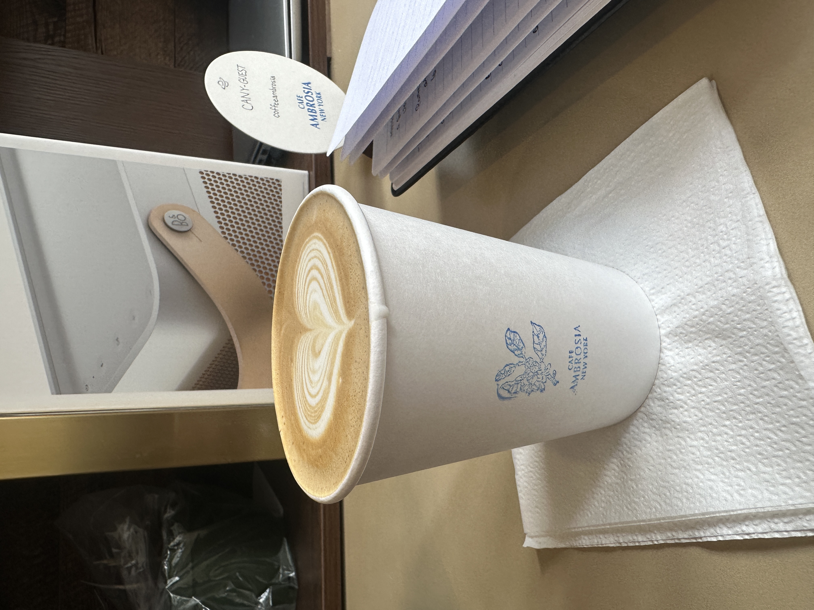
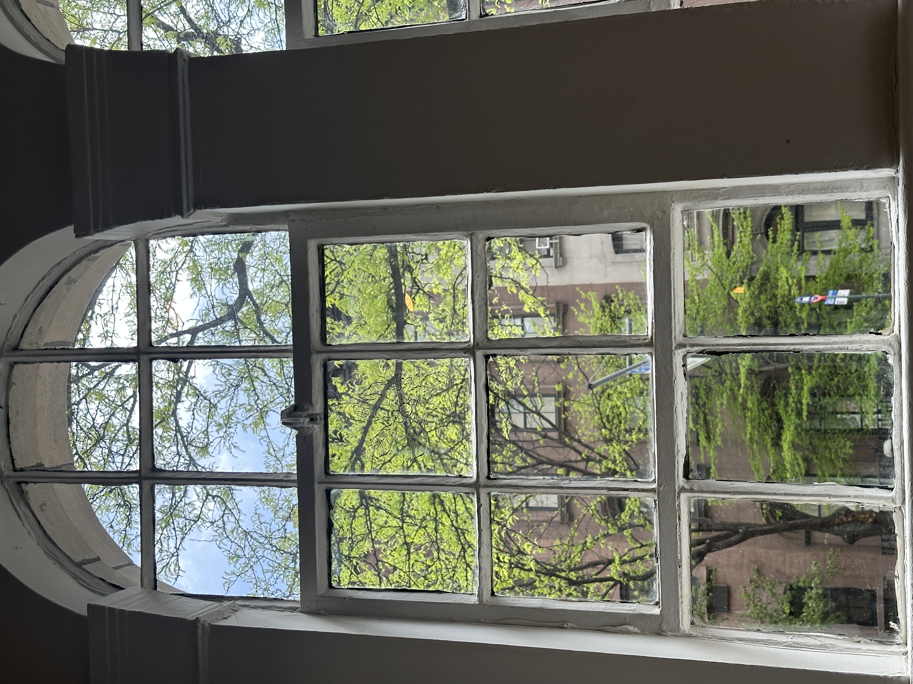
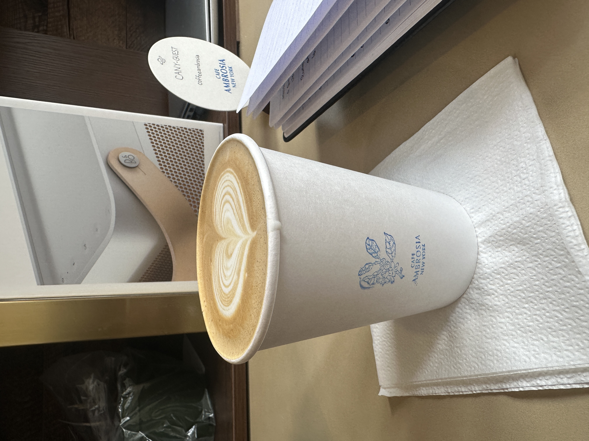
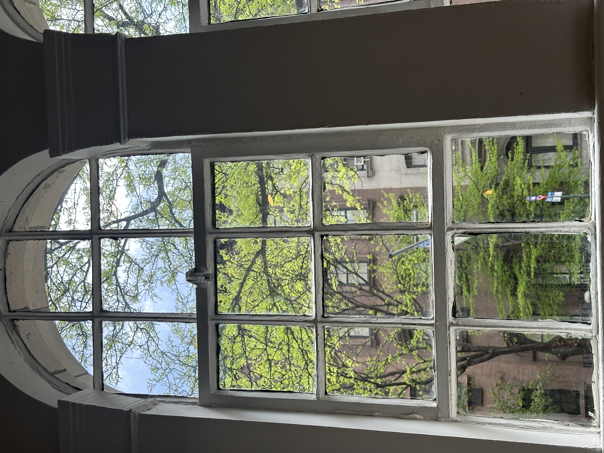

My Two Cents Date: April 27th 2025
The vibe at Cafe Ambrosia is really fun, with a great selection of songs playing in the background. It’s a perfect spot to sit and work, thanks to the beautiful blend of natural and ambient lighting. Open windows, high ceilings, and low-hanging lamps create a relaxed, airy feel. The decor is minimalist, very open, and inspired by Greek and French styles. Plus, there’s free Wi-Fi, which makes it easy to spend the whole day there.
I ordered a vanilla latte (around $7), and it was really fresh. The vanilla flavor wasn’t overpowering — it had a light, earthy taste with subtle hints of chocolate and even a slight tea-like note. The menu is basic but covers everything you’d expect from a good café.
P.S. Be sure to try their Tiramisu Latte — it’s what they’re famous for!
Bye!